Cornichon
Cornichon
| Latin name | Cucumis sativus |
|---|---|
| Family | Condiments & ferments |
| Origin | France |
| Season (France) | All year |
| Flavour | Sour · Salty · Fresh · Tangy |
| Typical price (France) | 8–16 €/kg |
What it is
The French kind is picked at three or four centimetres and pickled in vinegar with tarragon and pearl onions, which makes it sharp — as opposed to the American dill pickle, brined and sour rather than vinegared. They are not interchangeable.
In the kitchen
Chop them into a sauce gribiche or a rémoulade at the last moment. Left to sit, they leach vinegar and thin the whole thing.
Goes with
Mustard Capers Egg Tarragon Shallot Parsley Beef Butter
Same species
Cantaloupe melon Cucumber Honeydew melon Narazuke Salt-fermented dill cucumber
Also used with
Abondance Chevrotin Cod liver Calf's mesentery Head cheese Matjes herring
Something wrong here, or missing? Tell us